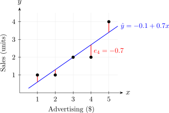

2.2 Least-squares estimation of the parameters
The parameters \(\beta _0\) and \(\beta _1\) are unknown and must be estimated from the data. The method of least squares chooses the line that makes the sum of the squared vertical distances from the points to the line as small as possible.
Definition 2.2.1. The least-squares criterion is \[ S(\beta _0, \beta _1) = \sum _{i=1}^n \left ( y_i - \beta _0 - \beta _1 x_i \right )^2 . \] The least-squares estimators \(\hat \beta _0, \hat \beta _1\) are the values of \(\beta _0, \beta _1\) that minimise \(S\).
Before solving, we fix some notation that will be used throughout the course.
Definition 2.2.2. With \(\bar x = \frac 1n\sum x_i\) and \(\bar y = \frac 1n\sum y_i\), \begin {align*} S_{xx} &= \sum _{i=1}^n (x_i - \bar x)^2, \\ S_{xy} &= \sum _{i=1}^n (x_i - \bar x)(y_i - \bar y), \\ S_{yy} &= \sum _{i=1}^n (y_i - \bar y)^2 . \end {align*}
- (i)
- \(\sum _{i=1}^n (x_i - \bar x) = 0\);
- (ii)
- \(S_{xx} = \sum x_i^2 - n\bar x^2 = \sum x_i^2 - \dfrac {\left (\sum x_i\right )^2}{n}\);
- (iii)
- \(S_{xy} = \sum (x_i - \bar x) y_i = \sum x_i y_i - n \bar x \bar y = \sum x_i y_i - \dfrac {\left (\sum x_i\right )\left (\sum y_i\right )}{n}\).
The same holds for \(S_{yy}\) with \(y\) in place of \(x\).
Proof. (i) \(\sum (x_i - \bar x) = \sum x_i - n\bar x = n\bar x - n\bar x = 0\).
(ii) Expanding the square, \begin {align*} S_{xx} &= \sum \left (x_i^2 - 2\bar x x_i + \bar x^2\right ) = \sum x_i^2 - 2\bar x \sum x_i + n\bar x^2 \\ &= \sum x_i^2 - 2n\bar x^2 + n\bar x^2 = \sum x_i^2 - n\bar x^2 , \end {align*}
and \(n\bar x^2 = n\left (\sum x_i / n\right )^2 = \left (\sum x_i\right )^2/n\).
(iii) \(S_{xy} = \sum (x_i - \bar x) y_i - \bar y \sum (x_i - \bar x) = \sum (x_i - \bar x) y_i\) by (i). Then \(\sum (x_i - \bar x) y_i = \sum x_i y_i - \bar x \sum y_i = \sum x_i y_i - n\bar x \bar y\). □
The forms with \(\sum x_i^2\) and \(\sum x_i y_i\) are the ones to use by hand: they need only the column totals of a table, as in the examples below.
Theorem 2.2.4 (Least-squares estimators). Provided the \(x_i\) are not all equal, the least-squares estimators of \(\beta _1\) and \(\beta _0\) are \[ \boxed {\;\hat \beta _1 = \frac {S_{xy}}{S_{xx}}, \qquad \hat \beta _0 = \bar y - \hat \beta _1 \bar x\;} \] and the fitted regression line is \(\hat y = \hat \beta _0 + \hat \beta _1 x\).
Proof. At a minimum of \(S\) both partial derivatives vanish: \begin {align*} \frac {\partial S}{\partial \beta _0} &= -2 \sum \left ( y_i - \beta _0 - \beta _1 x_i \right ) = 0, \\ \frac {\partial S}{\partial \beta _1} &= -2 \sum x_i \left ( y_i - \beta _0 - \beta _1 x_i \right ) = 0 . \end {align*}
Dividing by \(-2\) and rearranging gives the normal equations \begin {align*} n\hat \beta _0 + \hat \beta _1 \sum x_i &= \sum y_i, \\ \hat \beta _0 \sum x_i + \hat \beta _1 \sum x_i^2 &= \sum x_i y_i . \end {align*}
Dividing the first normal equation by \(n\) gives \(\hat \beta _0 + \hat \beta _1 \bar x = \bar y\), that is, \(\hat \beta _0 = \bar y - \hat \beta _1 \bar x\). Substituting this into the second, \[ (\bar y - \hat \beta _1 \bar x)\, n\bar x + \hat \beta _1 \sum x_i^2 = \sum x_i y_i , \] and collecting the terms in \(\hat \beta _1\), \[ \hat \beta _1 \left ( \sum x_i^2 - n\bar x^2 \right ) = \sum x_i y_i - n\bar x\bar y , \] which by Lemma 2.2.3 reads \(\hat \beta _1 S_{xx} = S_{xy}\). Since the \(x_i\) are not all equal, \(S_{xx} > 0\) and we may divide.
It remains to check that this stationary point is a minimum. The second derivatives are \[ \frac {\partial ^2 S}{\partial \beta _0^2} = 2n, \qquad \frac {\partial ^2 S}{\partial \beta _1^2} = 2\sum x_i^2, \qquad \frac {\partial ^2 S}{\partial \beta _0 \, \partial \beta _1} = 2\sum x_i , \] constants, so the Hessian matrix is the same at every point. Its leading entry \(2n\) is positive and its determinant is \[ 4n\sum x_i^2 - 4\left (\sum x_i\right )^2 = 4n\left ( \sum x_i^2 - n\bar x^2 \right ) = 4nS_{xx} > 0 . \] The Hessian is therefore positive definite everywhere, \(S\) is a convex function, and the stationary point is its global minimum. □
Note. If all the \(x_i\) are equal then \(S_{xx} = 0\) and the slope cannot be estimated: every line through the point \((x_1, \bar y)\) fits equally well. To learn how \(y\) changes with \(x\), the data must contain different values of \(x\).
Definition 2.2.5. The fitted value at \(x_i\) is \(\hat y_i = \hat \beta _0 + \hat \beta _1 x_i\), and the residual is \(e_i = y_i - \hat y_i\), the vertical distance from the \(i\)th point to the fitted line.
The residual \(e_i\) is observed; the error \(\varepsilon _i = y_i - \beta _0 - \beta _1 x_i\) is not, because \(\beta _0\) and \(\beta _1\) are unknown. The residuals are our estimates of the errors.
Example 2.2.6. Fit the least-squares line to the advertising data of Example 1.0.1, and interpret the estimates.
Solution. Set out the working in a table, one row per observation, and add up the columns:
| \(i\) | \(x_i\) | \(y_i\) | \(x_i^2\) | \(x_i y_i\) | \(y_i^2\) |
| 1 | 1 | 1 | 1 | 1 | 1 |
| 2 | 2 | 1 | 4 | 2 | 1 |
| 3 | 3 | 2 | 9 | 6 | 4 |
| 4 | 4 | 2 | 16 | 8 | 4 |
| 5 | 5 | 4 | 25 | 20 | 16 |
| \(\sum \) | 15 | 10 | 55 | 37 | 26 |
So \(n = 5\), \(\bar x = 15/5 = 3\) and \(\bar y = 10/5 = 2\). By Lemma 2.2.3, \begin {align*} S_{xx} &= 55 - \frac {15^2}{5} = 55 - 45 = 10, \\ S_{xy} &= 37 - \frac {15 \times 10}{5} = 37 - 30 = 7 . \end {align*}
By Theorem 2.2.4, \[ \hat \beta _1 = \frac {S_{xy}}{S_{xx}} = \frac {7}{10} = 0.7, \qquad \hat \beta _0 = \bar y - \hat \beta _1 \bar x = 2 - 0.7 \times 3 = -0.1 , \] and the fitted line is \[ \hat y = -0.1 + 0.7x . \] Interpretation. The slope says that each extra dollar of advertising goes with an increase of \(0.7\) units in mean sales. The intercept would be the mean sales with no advertising at all, but \(x = 0\) lies outside the data, which run from \(1\) to \(5\), and negative sales are impossible. The intercept here is simply where the line has to cross the axis to fit the observed range; it should not be read as a prediction. Using a fitted line outside the range of the data is called extrapolation, and it is unreliable.
The fitted values and residuals are
| \(x_i\) | 1 | 2 | 3 | 4 | 5 |
| \(y_i\) | 1 | 1 | 2 | 2 | 4 |
| \(\hat y_i = -0.1 + 0.7x_i\) | 0.6 | 1.3 | 2.0 | 2.7 | 3.4 |
| \(e_i = y_i - \hat y_i\) | 0.4 | \(-0.3\) | 0.0 | \(-0.7\) | 0.6 |
They are shown as the vertical segments in Figure 3.

Example 2.2.7. In a chemical process, the yield \(y\) (%) was recorded at six temperatures \(x\) (\(^\circ \)C):
| Temperature \(x\) | 10 | 20 | 30 | 40 | 50 | 60 |
| Yield \(y\) | 52 | 58 | 63 | 70 | 74 | 81 |
Fit a straight line, and estimate the mean yield at \(45^\circ \)C.
Solution.
| \(i\) | \(x_i\) | \(y_i\) | \(x_i^2\) | \(x_i y_i\) | \(y_i^2\) |
| 1 | 10 | 52 | 100 | 520 | 2704 |
| 2 | 20 | 58 | 400 | 1160 | 3364 |
| 3 | 30 | 63 | 900 | 1890 | 3969 |
| 4 | 40 | 70 | 1600 | 2800 | 4900 |
| 5 | 50 | 74 | 2500 | 3700 | 5476 |
| 6 | 60 | 81 | 3600 | 4860 | 6561 |
| \(\sum \) | 210 | 398 | 9100 | 14930 | 26974 |
Here \(n = 6\), \(\bar x = 210/6 = 35\) and \(\bar y = 398/6 = 66.3333\). Then \begin {align*} S_{xx} &= 9100 - \frac {210^2}{6} = 9100 - 7350 = 1750, \\ S_{xy} &= 14930 - \frac {210 \times 398}{6} = 14930 - 13930 = 1000, \end {align*}
so \[ \hat \beta _1 = \frac {1000}{1750} = 0.5714, \qquad \hat \beta _0 = 66.3333 - 0.5714 \times 35 = 46.3333 , \] and the fitted line is \(\hat y = 46.3333 + 0.5714x\). Each extra degree raises the mean yield by about \(0.57\) percentage points.
At \(x = 45\), inside the range of the data, \(\hat y = 46.3333 + 0.5714 \times 45 = 72.05\%\).
Remark. Carry plenty of decimal places in intermediate steps, or keep exact fractions. Here \(\hat \beta _1 = 4/7\) exactly; rounding it to \(0.57\) before computing \(\hat \beta _0\) would give \(\hat \beta _0 = 66.3333 - 0.57 \times 35 = 46.38\), already wrong in the second decimal place.
Questions on this section
Stuck on something here? Ask below and it stays attached to this topic.